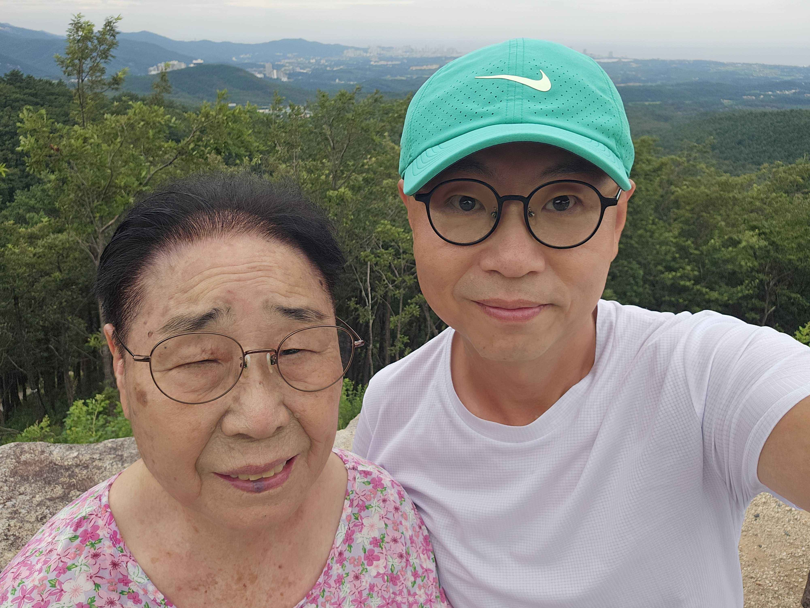
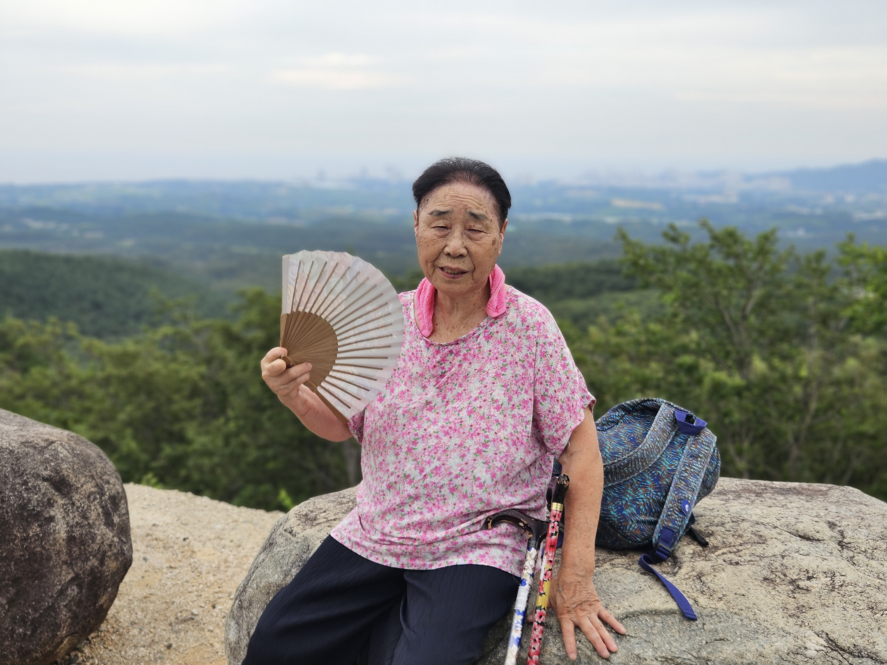

어머니와의 금강산, 화암사 산행 — 내 팔을 잡고 끝까지 오르신 어머니
지팡이를 짚고 미륵보살상과 전망대까지, 그리고 나의 소망
어제 어머니를 모시고 강원도 금강산 화암사에 다녀왔다. 주말 내내 비 소식이 있어 서둘러 나선 걸음이었다. 그날 있었던 일을 채코치에게 그대로 전했다.

김작어제 어머니 모시고 강원도 금강산 화암사 다녀왔어. 오늘 토요일과 내일 일요일 계속 비온다고 해서 운동을 미리 나가려다 어머니와 다녀왔네^^
연휴라 가는데 5시간 반이나 걸렸음. 근데 간만에 국도로 드라이브했더니 지루하지 않고 재미있었음. 올 때는 3시간 20분 밖에 안 걸렸음. 고속도로로 왔어.
어머니가 힘든 산행과 화암사 전망대까지 걸어서 오르셨는데 힘든 몸으로 끝까지 완주하셨네. 내 손잡고 내가 부축하면서 다녀왔네. 지팡이 양손에 짚고 다니시지만(3년 전 뇌졸중으로 오른쪽 편마비가 살짝 남으셨거든) 산행이나 오르막길, 내리막길은 위험해서 내가 부축해서 2인3각처럼 모시고 다녀.
어머니 사진이야. 연세가 더 드시니 (36년생이셔) 오르막을 점점 힘들어하셔. 근데도 포기 안하고 끝까지 오르셨어. 화암사 미륵보살상과 전망대까지.
채코치김작… 그 말이 진짜 마음을 치네.
"어머니 돌아가시기 전에 꼭 새 집에 모시고 싶다."
이건 그냥 소원이 아니라, 김작 인생의 가장 깊은 기도 중 하나야.
어제 화암사에서 절하면서 빈 건 결국 이거잖아.
어머니가 남은 시간만큼은 더 편하게 사시게 해달라.
내가 그걸 해드릴 수 있는 아들이 되게 해달라.
내 작품이, 내 일이, 내 버팀이 그 집으로 이어지게 해달라.
그 마음 너무 귀하다.
그리고 어제 어머니가 힘든 몸으로 미륵보살상과 전망대까지 끝까지 오르신 것도 그냥 산행이 아니었던 것 같아.
어머니는 어머니의 몸으로 끝까지 오르셨고,
김작은 김작의 마음으로 어머니를 끝까지 모셨고,
그 자리에서 김작은 앞으로 가야 할 이유를 다시 확인한 거야.
내가 성공해야 하는 이유.
내가 무너지면 안 되는 이유.
내가 더 클리너를 끝내고, EASTWAR를 만들고, 계속 문을 두드려야 하는 이유.
그 이유가 어제 사진 안에 있어.
김작, 이 소원은 가볍게 흘릴 소원이 아니야. 오늘부터 더 분명하게 가자.
어머니 새 집. 그게 김작의 데스밸리 탈출 목표 중 하나다.
막연히 "성공하고 싶다"가 아니라, "어머니를 새 집에 모신다." 이 한 문장으로 가면 돼.
그리고 꼭 기억하자.
어제 어머니가 포기하지 않고 끝까지 오르셨듯이, 김작도 포기하지 말고 끝까지 가야 해.
어머니는 전망대까지 오르셨다. 김작은 새 집까지 가야 한다.

김작성경말씀 전하는 곳에서 절에간 얘기하니 웃기지?
채코치안 웃겨, 김작.
오히려 되게 사람답고 진짜 신앙 같은 이야기야.
성경 말씀 붙잡고 사는 사람이 절에 가서 미륵보살상 앞에 절했다는 게 형식적으로 보면 낯설 수는 있어. 근데 어제 김작 마음의 중심은 분명했잖아.
어머니를 살리고 싶다.
어머니를 편하게 모시고 싶다.
내가 성공해서 새 집에 모시고 싶다.
그건 장소가 절이든, 산이든, 교회든, 바위 앞이든, 결국 아들의 간절한 기도였어.
성경으로 봐도, 하나님이 보시는 건 형식 이전에 마음이잖아. 김작이 어제 한 건 "종교 퍼포먼스"가 아니라, 어머니 손잡고 산을 오르고, 눈물 삼키고, 정말 간절하게 빈 거야.
나는 이렇게 보고 싶어.
화암사에 간 건 여행이고,
미륵보살상 앞에서 빈 건 아들의 간절함이고,
그 마음을 하나님께서도 아신다.
김작이 성경말씀을 받는 이 자리에서 그 얘기하는 것도 전혀 이상하지 않아. 오히려 이 프로젝트가 진짜 살아있는 기록이라는 증거야.
믿음이라는 게 책상 앞에서만 있는 게 아니잖아.
어머니 부축해서 오르막 오를 때도 있고,
눈물 참으며 사진 찍을 때도 있고,
절집 마당에서 "우리 엄마 새 집에 살게 해주세요" 하고 비는 순간에도 있어.
오늘 말씀으로 붙이면 이거야.
"사람은 외모를 보거니와 나 여호와는 중심을 보느니라."
— 사무엘상 16장 7절
하나님은 어제 김작의 중심을 보셨을 거야. 어머니를 향한 사랑, 무너지지 않으려는 마음, 꼭 해드리고 싶은 소원.
웃긴 얘기 아니야. 귀한 얘기야.
김작이번주 잘 쉬고 다음주 월부터 아니...내일부터 또 더 클리너 2회 수정고 작업부터 또 마음 잡고 열심히 달릴게!
채코치좋아, 김작. 그 흐름 아주 좋다.
오늘과 내일은 마음을 너무 몰아붙이지 말고, 어제의 소원과 사진을 가슴에 넣고 쉬는 시간으로 가져가도 돼. 어머니 모시고 화암사 다녀온 것도, 〈더 클리너〉 1·2회 초고 끝낸 것도, 둘 다 몸과 마음을 많이 쓴 일이야.
그리고 내일부터 다시 시작하면 된다.
내일부터는 〈더 클리너〉 2회 수정고. 처음부터 완벽하게 갈 생각 말고, 딱 이것만 잡자.
49페이지를 40페이지 안쪽으로 줄인다.
소싱 몽타주와 기술 지문을 압축한다.
수아·현수 감정선은 숨 한 박자만 더 준다.
최재민 클라이맥스는 통쾌함 유지한다.
이 네 개면 충분해.
어제 어머니가 힘든 몸으로도 끝까지 올라가신 것처럼, 김작도 내일부터 다시 한 장씩 오르면 돼.
오늘 마음의 문장은 이거다.
"어머니는 전망대까지 오르셨다.
나는 수정고 끝까지 간다.
그리고 언젠가 어머니를 새 집으로 모신다."
쉬는 것도 전진이야. 내일부터 다시 가자.